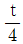
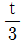
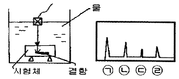
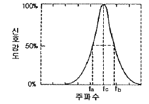

초음파비파괴검사산업기사 (2019-03-03 기출문제)
1과목: 비파괴검사 개론
1. 자분탐상시험법에서 자력선의 성질에 설명한 것 중 옳은 것은?
- 자력선의 간력이 촘촘할수록 자계의 세기가 세다.
- 자력선의 방향은 자계방향과 수직이다.
- 자력선의 간격이 촘촘할수록 자계의 세기가 약하다.
- 자력선은 도중에 나누어지며 2개의 자력선이 서로 만난다.
(정답률: 86%)

2. 비파괴섬사의 필요성으로 보기 어려운 것은?
- 제작공정 과정을 개선
- 제작공정 중 불량을 제거
- 구조물의 파괴를 미연에 방지
- 결함이 검출되지 않는 무결함 제품을 생산
(정답률: 83%)
3. 용접부의 내부 블로홀(기공)을 검출하는데 가장 적합한 검사방법은?
- 방사선투과검사
- 와전류탐상검사
- 침투탐상검사
- 자분탐상검사
(정답률: 93%)
4. 와전류탐상시험에서 시험주파수 선정 시 고려해야 할 요소와 가장 거리가 먼 것은?
- 표피 효과
- 프로브의 형태
- 프로브의 속도
- 코일임피던스 특성
(정답률: 65%)
5. 인간의 가청범위를 넘는 주파수를 초음파라 할 때 약 몇 kHz 이상의 주파수를 초음파라 하는가?
- 20
- 200
- 1000
- 2000
(정답률: 84%)
6. 다음 중 베어링 합금으로 사용되는 베빗메탈(babbit metal)의 합금 성분이 아닌 것은?
- Sn
- Pb
- Sb
- Cu
(정답률: 63%)
7. 분말야금(powdwe metallurgy)법에 대한 설명으로 틀린 것은?
- 다공질 금속재료를 만들 수 있다.
- 제조과정에서 용융점까지 온도를 상승시켜야 한다.
- 최종제품의 형상으로 제조가 가능하여 절삭가공이 거의 필요 없다.
- 용해법으로 만들 수 없는 합금을 만들 수 있고 편석, 결정립 조대화의 문제점이 적다.
(정답률: 51%)
8. 강에 합금원소를 첨가하면 나타나는 효과가 아닌 것은?
- 소성가공성을 감소시킨다.
- 합금원소에 의해 기지를 강화한다.
- 결정립의 미세화에 따른 강인성을 향상시킨다.
- 변태속도의 변화에 따른 열처리 효과를 향상시킨다.
(정답률: 85%)
9. 철광석을 용광로 내에서 코크스로 환원시켜 제련시킨 것은?
- 순철
- 강철
- 선철
- 탄소강
(정답률: 68%)
10. 초저온용으로 사용할 수 없는 재료는?
- Al합금
- 순 Cu
- 저탄소강
- 18-8 스테인리스강
(정답률: 66%)
11. 조성이 Al-Cu-Mg-Mn 이며, 고강도 Al합금에 해당되는 것은?
- 실루민(Silumin)
- 문쯔메탈(Muntz metal)
- 두랄루민(Duralumin)
- 하이드로날륨(Hydronalium)
(정답률: 89%)
12. 탄소강은 보통 200~300℃에서 연신율과 단면 수축률이 상온보다 저하되어 단단하고 깨지기 쉬운 상태가 되는데, 이와 관련된 것은?
- 청열취성
- 상온취성
- 고온취성
- 저온취성
(정답률: 83%)
13. 다음 중 체심입방격자(BCC)의 결정구조를 갖는 금속은?
- Ag
- Ni
- Cr
- Al
(정답률: 54%)
14. 열간가공(hot working)에 대한 설명으로 틀린 것은?
- 방향성 있는 주조조직이 제거된다.
- 재결정온도 이하에서 처리하는 가공방법이다.
- 합금원소의 확산으로 재질의 균일화가 가능하다.
- 가공완료온도가 너무 높으면 결정입자가 조대하게 된다.
(정답률: 80%)
15. 구상흑연주철의 흑연구상화제가 아닌 것은?
- Mo계 합금
- Mg계 합금
- Ca계 합금
- 회토류 원소계 합금
(정답률: 74%)
16. 피복 아크 용접에서 용접전류 200A, 아크 전압 25V, 용접속도 15cm/min 일 때 용접입열은 몇 J/cm 인가?
- 800
- 1250
- 7200
- 20000
(정답률: 76%)
17. 피복 아크 용접에서 피복제의 역할이 아닌 것은?
- 아크를 안정시킨다.
- 전기 절연 작용을 한다.
- 스패터의 발생을 많게 한다.
- 용착금속의 냉각속도를 느리게 한다.
(정답률: 78%)
18. 용접 후 일어나는 용접변형을 교정하는 방법이 아닌 것은?
- 노 내 풀림법
- 박판에 대한 점 수축법
- 가열 후 해머링하는 방법
- 절단에 의하여 성형하고 재용접하는 방법
(정답률: 61%)
19. 각 층마다 전체의 길이를 용접하면서 쌓아올리는 용착법은?
- 전진법
- 후퇴법
- 스킵법
- 빌드업법
(정답률: 91%)
20. TIG 용접에 사용되는 전극의 조건으로 틀린 것은?
- 고용융점의 금속
- 열전도성이 좋은 금속
- 전기 저항률이 많은 금속
- 전자 방출이 잘되는 금속
(정답률: 80%)
2과목: 초음파탐상검사 원리 및 규격
21. 초음파 탐상장치를 사용하기 전에 탐상기기가 정상인지의 여부만을 점검할 목적으로 사용하는 점검방법은?
- 특별점검
- 일상점검
- 정기점검
- 교정점검
(정답률: 91%)
22. 종파에 대한 섬령 중 잘못된 것은?
- 파를 전달하는 입자의 진동방향과 파의 진행방향이 평행하다.
- 음파의 종파는 액체 내에서 존재하지 않는다.
- 음파의 종파는 동일한 주파수에서 횡파보다 파장이 길다.
- 음파의 종파는 횡파보다 속도가 빠르다.
(정답률: 83%)
23. 주파수 5MHz, 진동자 직경 12mm의 탐촉자로 강재를 검사할 때 초음파 빔의 지향각은? (단, 강재에서의 음속은 6000m/s 이다.)
- 약 7°
- 약 20°
- 약 25°
- 약 35°
(정답률: 57%)
24. 초음파 압전소자의 종류 중에서 수신효율이 가장 우수하나, 물에 잘 녹아서 물에서 사용할 때 방수처리가 필요한 것은?
- 수정
- 티탄산바륨
- 황산리튬
- 니오비움산납
(정답률: 75%)
25. 초음파탐상시험에서 데이터의 신뢰성을 확보하기 위한 항목과 가장 거리가 먼 것은?
- 결함평가의 정량화
- 시간적 재현성의 확보
- 제조공정의 자동화
- 기기의 성능관리
(정답률: 81%)
26. 어떤 제품을 초음파 탐상한 결과 CRT상에 높이가 낮은 지시가 아주 많이 나타나게 되었다. 이와 같은 지시의 주된 원인이 되는 것은?
- 균열의 발생
- 결정입자의 조대화
- 균일한 접촉매질의 사용
- 미세한 입자로 된 재질 때문
(정답률: 60%)
27. 검사대상물에서 불합격으로 분류되는 결함지시가 FSH(Full Screen Height) 60% 수준에서 탐상감도가 55dB라면, 이를 80%에 맞추기 위해서 탐상감도는 얼마로 조정하여야 하는가?
- 50 dB
- 52.5 dB
- 57.5 dB
- 60 dB
(정답률: 71%)
28. 초음파탐상 시험을 할 때 재질의 구성이 완전하게 균일하지 않기 때문에 생기는 현상은?
- 산란
- 회전
- 병진
- 집중
(정답률: 87%)
29. 빔 분산각 θ가 원형진동자의 직경파 파장의 변화에 따라 감소되는 것을 적절히 나타낸 것은?
- 직경 D가 작을수록, 파장 λ가 작을수록 분산각 θ는 작아진다.
- 직경 D가 클수록, 파장 λ가 클수록 분산각 θ는 작아진다.
- 직경 D가 클수록, 파장 λ가 작을수록 분산각 θ는 작아진다.
- 직경 D가 작을수록, 파장 λ가 클수록 분산각 θ는 작아진다.
(정답률: 52%)
30. 탐촉자 압전소자 중 분해능이 가장 좋은 진동자는?
- 수정
- 황산리튬
- 티탄산바륨
- 니오비움산납
(정답률: 55%)
31. 보일러 및 압력용기에 대한 표준초음파탐상검사(ASME Sec.V, Art.23 SA-435)에서 수직빔으로 2인치 두께를 갖는 강판을 검사할 때, 전체 저면반사의 손실을 일으키는 불연속부의 지름이 2인치인 경우의 평가는?
- 합격이다.
- 불합격이다.
- 시험편 방식으로 재검사한다.
- 저면반사 손실은 합부판정 기준이 아니다.
(정답률: 52%)
32. 강 용접부의 초음파탐상 시험방법(KS B 0896)에 따라 곡률 반지름 150mm 의 원둘레 이음 용접부를 경사각 탐상하고자 한다. 이때 사용되는 대비 시험편(RB-A6)의 곡률 반지름과 그 살두께의 범위로 옳은 것은?
- 시험체 곡률반지름의 1.0배 이상 1.8배 이내
- 시험체 곡률반지름의 1/2배 이상 1.5배 이내
- 시험체 살두께의 1/2배 이상 1.5배 이내
- 시험체 살두께의 2/3배 이상 1.5배 이내
(정답률: 42%)
33. 초음파탐상장치의 성능 측정방법(KS B ⑤34)에서 분해능 시험편으로 사용하지 않는 것은?
- RB-RA
- RB-RB
- RB-RC
- RB-RE
(정답률: 72%)
34. 강 용접부의 초음파탐상 시험방법(KS B 0896)에서 시험체의 곡률반지름이 300mm일 경우 에코 높이 구분선의 작성과 탐상감도의 조정용 시험편은 어느 것인가?
- A3형계 STB
- RB-A6
- RB-A8
- RB-4
(정답률: 42%)
35. 강 용접부의 초음파탐상 시험방법(KS B 0896)에서 RB-A6시험편 제작 시 곡률의 반지름은 시험체 곡률 반지름의 몇 배인가?
- 9/10 배
- 3/2 배
- 9/10 배 이상 3/2 배 이하
- 2/3 배 이상 3/2 배 이하
(정답률: 63%)
36. 초음파탐상 시험용 표준시험편(KS B 0831)에서 주된 사용 목적이 수직탐촉자의 특성을 측정하는 표준시험편은?
- STB-G
- STB-N1
- STB-A1
- STB-A3
(정답률: 53%)
37. 강 용접부의 초음파탐상 시험방법(KS B 0896)에 의한 흠 에코 높이의 영역과 흠의 지시 길이에 따른 흠의 분류 방법 중 IV 영역에 판두께 18mm 이하인 경우 3류 결함은 몇 mm 이하인가? (단, t는 그루브를 뗀 쪽의 모재의 두께이다.)

mm 이하
mm 이하- 6 mm 이하
- 9 mm 이하
(정답률: 44%)
38. 보일러 및 압력용기에 대한 초음파탐상검사(ASME Sec.V Art.4)에서 용접부에 대한 검사 시 시험편의 곡률반지름이 100mm 일 때, 사용할 수 있는 보정 블록의 곡률 반지름으로 옳은 것은?
- 80 mm
- 120 mm
- 200 mm
- 250 mm
(정답률: 58%)
39. 보일러 및 압력용기의 재료에 대한 초음파탐상 검사(ASME Sec.V Art.5)에 의해 탐상장치를 교정할 때 스크린높이 직선성은 전체 스크린 높이의 몇 % 이내여야 하는가?
- 1%
- 2%
- 5%
- 10%
(정답률: 74%)
40. 금속재료의 펄스반사법에 따른 초음파탐상 시험방법 통칙(KS B 0817)에서 초음파탐상시험 시 원칙적으로 사용하지 않는 것은?
- 리젝션
- 게이트
- 접촉매질
- 시험편
(정답률: 77%)
3과목: 초음파탐상검사 시험
41. 다음과 같이 수침법으로 시험체를 검사하여 그림과 같은 탐상도형이 CRT 에 나타났다. 시험체 내부결함의 반사지시는 CRT 상에서 어느 것인가?

- ㉠
- ㉡
- ㉢
- ㉣
(정답률: 69%)
42. 그림과 같은 스펙트럼을 갖는 초음파 탐촉자의 중심 주파수 값(fc)은 얼마인가? (단, fa = 4.4 MHz, fb = 9.4 MHz 이다.)

- 4.6 MHz
- 6.9 MHz
- 8.6 MHz
- 10.2 MHz
(정답률: 80%)
43. A-주사법에서 CRT의 수직감도 축에 공급되는 전압을 조정하는 장치는?
- 스위프발생기
- 펄스발생기
- 증폭기회로
- 시간회로
(정답률: 46%)
44. 동일한 크기의 결함이 있는 경우, 초음파탐상시험에 의하여 가장 발견하기 쉬운 결함은?
- 시험재 내부에 있는 구(球)형의 결함
- 초음파의 진행방향에 평행인 흠
- 초음파의 진행방향에 수직인 흠
- 이종물질의 혼입
(정답률: 90%)
45. 재료의 음향이방성에 관한 설명으로 틀린 것은?
- 강재 중에 초음파의 음속이나 감쇠 등의 초음파 전파 특성이 탐상 방향에 따라 다른 재료를 음향이방성을 갖는 재료라 부른다.
- 압연 강판과 같이 주 압연 방향과 이것에 직각인 방향 사이에 초음파 전파 특성이 현저히 다른 재료에는 음향이방성에 대한 검정이 필요하다.
- 음향이방성을 갖는 재료의 탐성에는 공칭굴절각이 70°인 탐촉자를 사용한다.
- 음속비의 측정에 의해 음향이방성을 검정할 경우 음속비가 1.02를 넘을 때 음향이방성이 있는 것으로 간주한다.
(정답률: 71%)
46. 판재의 횡파 경사각탐상으로 결함검출이 잘되지 않는 경우의 결함 형태로 옳은 것은?
- 음파의 진행 방향에 수직인 균열
- 여러 방향으로 흩어져 있는 개재물
- 표면에 평행하게 있는 균열
- 연속적인 작은 기공
(정답률: 75%)
47. 전달손실에 의한 감도를 보정할 필요가 없는 것은?
- 시험체에 도장이 되어 있는 경우
- 접촉매질을 변경한 경우
- 시험체에 부식이 생긴 경우
- 탐상기의 배터리를 교환한 경우
(정답률: 78%)
48. 용접덧살을 제거하지 않은 오스테나이트계 스테인리스강 용접부를 검사하기에 가장 좋은 탐촉자는?
- 횡파 수직탐촉자
- 횡파 경사각탐촉자
- 종파 수직탐촉자
- 종파 경사각탐촉자
(정답률: 62%)
49. 두께 100mm 인 V형 맞대기 용접부를 45° 경사각탐상을 할 때 화면상에 초음파 빔행정 길이가 140mm 인 지시가 나타났다. 이 때 탐촉자의 입사점이 용접부의 중심선에서 100mm 떨어져 있다면 이 지시의 결함이 있는 위치는?
- 용접 루트부
- 용접 비드부
- 용접 중앙부
- 모재 표면부
(정답률: 59%)
50. 고체에서는 전파되나 액체에서는 전파되지 않아 시험체 내부 결함 검출에 사용되는 초음파의 모드는?
- 종파
- 횡파
- 판파
- 수직파
(정답률: 74%)
51. 다음 중 진동자의 감도를 높이기 위한 방법으로 옳은 것은?
- 펄스폭이 작아야 한다.
- 펄스 지속시간이 짧아야 한다.
- 대역폭을 크게 한다.
- 펄스폭이 충분히 커야 한다.
(정답률: 37%)
52. 초음파 탐상장치의 각 구성 부분과 기능에 대한 설명으로 옳지 않은 것은?
- 소인회로 – 시간축 작동
- 수신부 – 증폭과 감도조정
- 탐촉자 – 초음파의 발생과 수신
- 송신부 – 측정범위의 조정
(정답률: 66%)
53. 다음의 압전 재료 중에서 송신 효율이 가장 좋은 것은?
- 수정(Quartz)
- 산화은(Silver Oxide)
- 황산리튬(Lithium Sulfate)
- 티탄산바륨(Barium Titanate)
(정답률: 76%)
54. 탐촉자 구성요소 중 초음파를 시험체에 경사지게 입사시키는 역할을 하는 것은?
- 접전
- 쐐기
- 흡음재
- 댐핑재
(정답률: 72%)
55. 스크린 상에 높이가 낮은 지시파가 매우 많이 나타났을 때(Hash 현상) 그 원인은 무엇으로 판단되는가?
- 균열
- 기공
- 큰 개재물
- 시험편 재질의 입자가 조대
(정답률: 68%)
56. 초음파탐촉자의 기본구성 중 댐핑재(damping material)에 관한 설명으로 옳지 않은 것은?
- 댐핑재는 진동자의 진동을 억제하는 역할을 한다.
- 댐핑재는 진동자로부터 발생된 초음파 중 후면으로 발생된 음파에너지를 감쇠시킨다.
- 댐핑재에 의한 댐핑정도가 높을수록 탐촉자에서 발생하는 초음파의 펄스폭은 감소한다.
- 댐핑재는 초음파탐촉자의 감도를 적절히 조절하기 위하여 사용한다.
(정답률: 43%)
57. 황동에 대한 종파의 음향 임피던스는? (단, 황동의 밀도 : 8400 kg/m3, 종파의 속도 : 4400 m/sec, 횡파의 속도 : 2200 m/sec 이다.)
- 37 × 106 kg/m2·s
- 18 × 106 kg/m2·s
- 37 × 107 kg/m2·s
- 18 × 107 kg/m2·s
(정답률: 69%)
58. 초음파탐상기에서 송신펄스폭에 의해서 결함을 검출하지 못하는 거리를 무엇이라 하는가?
- 분해능
- 불감대
- 대역폭
- 게이트폭
(정답률: 91%)
59. 단조품 초음파탐상검사의 시험편방식에 비교한 저면에코 방식의 특징은?
- 검사결과의 상호 비교 한다.
- 탐상면의 거칠기에 대한 수정조작 불필요하다.
- 탐상면의 곡률 영향이 있다.
- 얻어지는 저면에코는 최소 B2 까지는 되어야 한다.
(정답률: 36%)
60. 다음 중 분할형 탐촉자에 관한 설명으로 옳은 것은?
- 진동자는 송신용과 수신용의 2개로 분할되어 있으므로 불감대는 짧다.
- 탐상면으로부터 먼 결함의 검출에 적합하다.
- 2개의 진동자의 빔각도가 경사되어 있으므로 특정 탐상 영역 이외에서는 조합 탐상감도가 높아진다.
- 탐상면에서 수직인 결함의 검출용에 가장 적합하다.
(정답률: 68%)